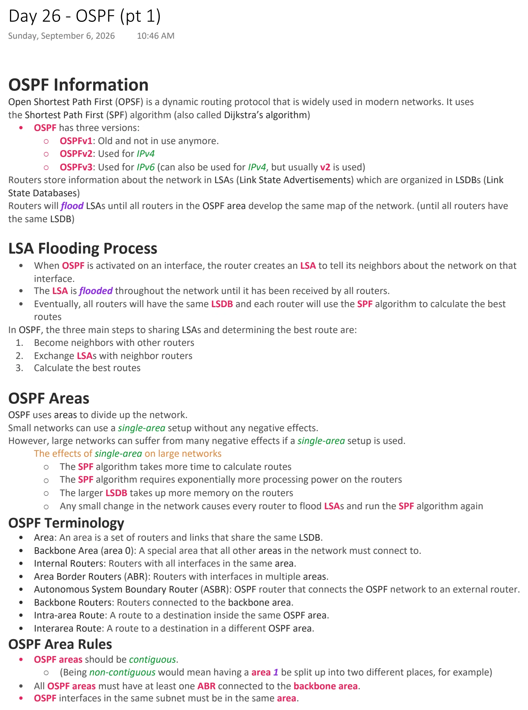
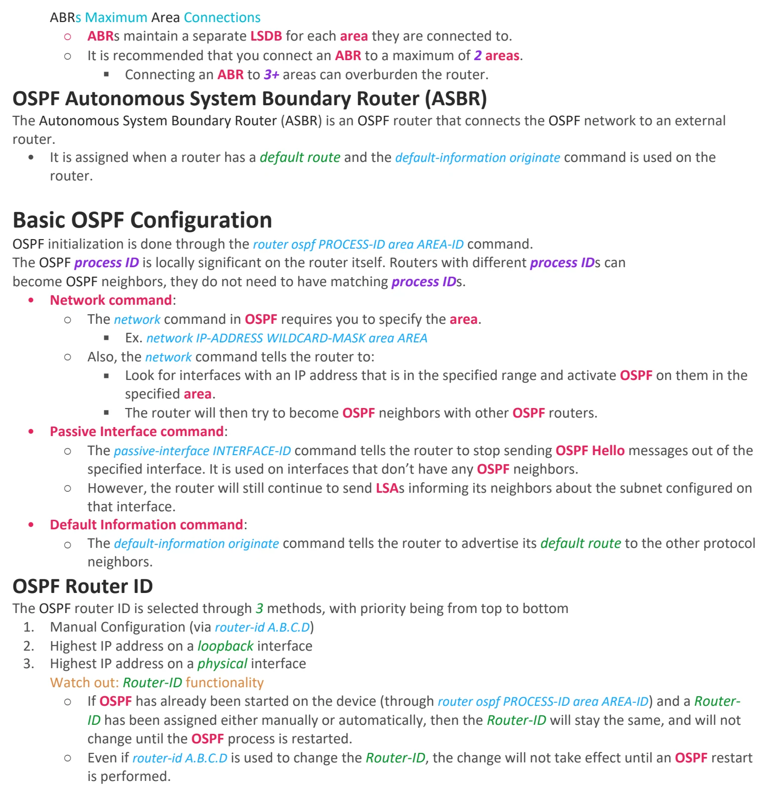

OSPF (pt 1)
Download original PDF

Text view — OSPF (pt 1)
Extracted from the original export. Diagrams and some formatting appear in the notes above.
Day 26 - OSPF (pt 1) Sunday, September 6, 2026 10:46 AM OSPF Information Open Shortest Path First (OPSF) is a dynamic routing protocol that is widely used in modern networks. It uses the Shortest Path First (SPF) algorithm (also called Dijkstra’s algorithm) • OSPF has three versions: ○ OSPFv1: Old and not in use anymore. ○ OSPFv2: Used for IPv4 ○ OSPFv3: Used for IPv6 (can also be used for IPv4, but usually v2 is used) Routers store information about the network in LSAs (Link State Advertisements) which are organized in LSDBs (Link State Databases) Routers will flood LSAs until all routers in the OSPF area develop the same map of the network. (until all routers have the same LSDB) LSA Flooding Process • When OSPF is activated on an interface, the router creates an LSA to tell its neighbors about the network on that interface. • The LSA is flooded throughout the network until it has been received by all routers. • Eventually, all routers will have the same LSDB and each router will use the SPF algorithm to calculate the best routes In OSPF, the three main steps to sharing LSAs and determining the best route are: 1. Become neighbors with other routers 2. Exchange LSAs with neighbor routers 3. Calculate the best routes OSPF Areas OSPF uses areas to divide up the network. Small networks can use a single-area setup without any negative effects. However, large networks can suffer from many negative effects if a single-area setup is used. The effects of single-area on large networks ○ The SPF algorithm takes more time to calculate routes ○ The SPF algorithm requires exponentially more processing power on the routers ○ The larger LSDB takes up more memory on the routers ○ Any small change in the network causes every router to flood LSAs and run the SPF algorithm again OSPF Terminology • Area: An area is a set of routers and links that share the same LSDB. • Backbone Area (area 0): A special area that all other areas in the network must connect to. • Internal Routers: Routers with all interfaces in the same area. • Area Border Routers (ABR): Routers with interfaces in multiple areas. • Autonomous System Boundary Router (ASBR): OSPF router that connects the OSPF network to an external router. • Backbone Routers: Routers connected to the backbone area. • Intra-area Route: A route to a destination inside the same OSPF area. • Interarea Route: A route to a destination in a different OSPF area. OSPF Area Rules • OSPF areas should be contiguous. ○ (Being non-contiguous would mean having a area 1 be split up into two different places, for example) • All OSPF areas must have at least one ABR connected to the backbone area. • OSPF interfaces in the same subnet must be in the same area. ABRs Maximum Area Connections ○ ABRs maintain a separate LSDB for each area they are connected to. ○ It is recommended that you connect an ABR to a maximum of 2 areas. § Connecting an ABR to 3+ areas can overburden the router. OSPF Autonomous System Boundary Router (ASBR) The Autonomous System Boundary Router (ASBR) is an OSPF router that connects the OSPF network to an external router. • It is assigned when a router has a default route and the default-information originate command is used on the router. Basic OSPF Configuration OSPF initialization is done through the router ospf PROCESS-ID area AREA-ID command. The OSPF process ID is locally significant on the router itself. Routers with different process IDs can become OSPF neighbors, they do not need to have matching process IDs. • Network command: ○ The network command in OSPF requires you to specify the area. § Ex. network IP-ADDRESS WILDCARD-MASK area AREA ○ Also, the network command tells the router to: § Look for interfaces with an IP address that is in the specified range and activate OSPF on them in the specified area. § The router will then try to become OSPF neighbors with other OSPF routers. • Passive Interface command: ○ The passive-interface INTERFACE-ID command tells the router to stop sending OSPF Hello messages out of the specified interface. It is used on interfaces that don’t have any OSPF neighbors. ○ However, the router will still continue to send LSAs informing its neighbors about the subnet configured on that interface. • Default Information command: ○ The default-information originate command tells the router to advertise its default route to the other protocol neighbors. OSPF Router ID The OSPF router ID is selected through 3 methods, with priority being from top to bottom 1. Manual Configuration (via router-id A.B.C.D) 2. Highest IP address on a loopback interface 3. Highest IP address on a physical interface Watch out: Router-ID functionality ○ If OSPF has already been started on the device (through router ospf PROCESS-ID area AREA-ID) and a Router- ID has been assigned either manually or automatically, then the Router-ID will stay the same, and will not change until the OSPF process is restarted. ○ Even if router-id A.B.C.D is used to change the Router-ID, the change will not take effect until an OSPF restart is performed. Day 26 - OSPF (pt 1) Sunday, September 6, 2026 10:46 AM OSPF Information Open Shortest Path First (OPSF) is a dynamic routing protocol that is widely used in modern networks. It uses the Shortest Path First (SPF) algorithm (also called Dijkstra’s algorithm) • OSPF has three versions: ○ OSPFv1: Old and not in use anymore. ○ OSPFv2: Used for IPv4 ○ OSPFv3: Used for IPv6 (can also be used for IPv4, but usually v2 is used) Routers store information about the network in LSAs (Link State Advertisements) which are organized in LSDBs (Link State Databases) Routers will flood LSAs until all routers in the OSPF area develop the same map of the network. (until all routers have the same LSDB) LSA Flooding Process • When OSPF is activated on an interface, the router creates an LSA to tell its neighbors about the network on that interface. • The LSA is flooded throughout the network until it has been received by all routers. • Eventually, all routers will have the same LSDB and each router will use the SPF algorithm to calculate the best routes In OSPF, the three main steps to sharing LSAs and determining the best route are: 1. Become neighbors with other routers 2. Exchange LSAs with neighbor routers 3. Calculate the best routes OSPF Areas OSPF uses areas to divide up the network. Small networks can use a single-area setup without any negative effects. However, large networks can suffer from many negative effects if a single-area setup is used. The effects of single-area on large networks ○ The SPF algorithm takes more time to calculate routes ○ The SPF algorithm requires exponentially more processing power on the routers ○ The larger LSDB takes up more memory on the routers ○ Any small change in the network causes every router to flood LSAs and run the SPF algorithm again OSPF Terminology • Area: An area is a set of routers and links that share the same LSDB. • Backbone Area (area 0): A special area that all other areas in the network must connect to. • Internal Routers: Routers with all interfaces in the same area. • Area Border Routers (ABR): Routers with interfaces in multiple areas. • Autonomous System Boundary Router (ASBR): OSPF router that connects the OSPF network to an external router. • Backbone Routers: Routers connected to the backbone area. • Intra-area Route: A route to a destination inside the same OSPF area. • Interarea Route: A route to a destination in a different OSPF area. OSPF Area Rules • OSPF areas should be contiguous. ○ (Being non-contiguous would mean having a area 1 be split up into two different places, for example) • All OSPF areas must have at least one ABR connected to the backbone area. • OSPF interfaces in the same subnet must be in the same area. ABRs Maximum Area Connections ○ ABRs maintain a separate LSDB for each area they are connected to. ○ It is recommended that you connect an ABR to a maximum of 2 areas. § Connecting an ABR to 3+ areas can overburden the router. OSPF Autonomous System Boundary Router (ASBR) The Autonomous System Boundary Router (ASBR) is an OSPF router that connects the OSPF network to an external router. • It is assigned when a router has a default route and the default-information originate command is used on the router. Basic OSPF Configuration OSPF initialization is done through the router ospf PROCESS-ID area AREA-ID command. The OSPF process ID is locally significant on the router itself. Routers with different process IDs can become OSPF neighbors, they do not need to have matching process IDs. • Network command: ○ The network command in OSPF requires you to specify the area. § Ex. network IP-ADDRESS WILDCARD-MASK area AREA ○ Also, the network command tells the router to: § Look for interfaces with an IP address that is in the specified range and activate OSPF on them in the specified area. § The router will then try to become OSPF neighbors with other OSPF routers. • Passive Interface command: ○ The passive-interface INTERFACE-ID command tells the router to stop sending OSPF Hello messages out of the specified interface. It is used on interfaces that don’t have any OSPF neighbors. ○ However, the router will still continue to send LSAs informing its neighbors about the subnet configured on that interface. • Default Information command: ○ The default-information originate command tells the router to advertise its default route to the other protocol neighbors. OSPF Router ID The OSPF router ID is selected through 3 methods, with priority being from top to bottom 1. Manual Configuration (via router-id A.B.C.D) 2. Highest IP address on a loopback interface 3. Highest IP address on a physical interface Watch out: Router-ID functionality ○ If OSPF has already been started on the device (through router ospf PROCESS-ID area AREA-ID) and a Router- ID has been assigned either manually or automatically, then the Router-ID will stay the same, and will not change until the OSPF process is restarted. ○ Even if router-id A.B.C.D is used to change the Router-ID, the change will not take effect until an OSPF restart is performed.